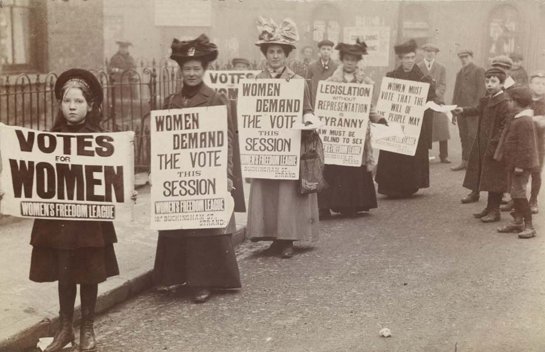
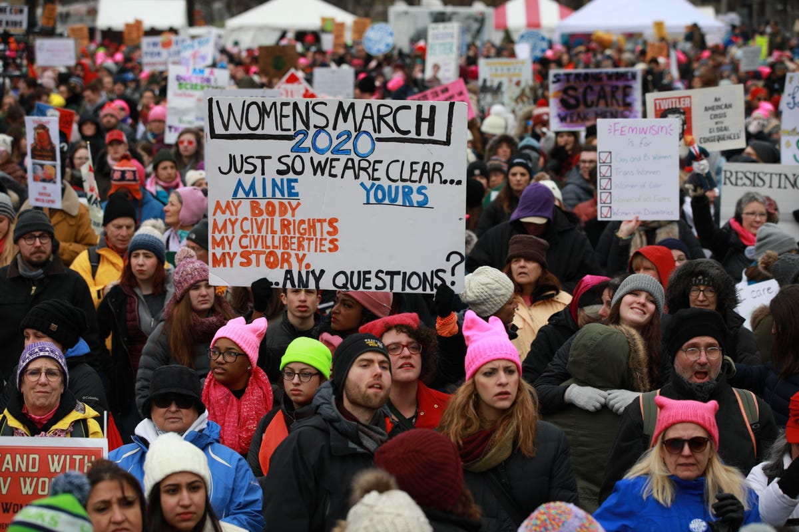
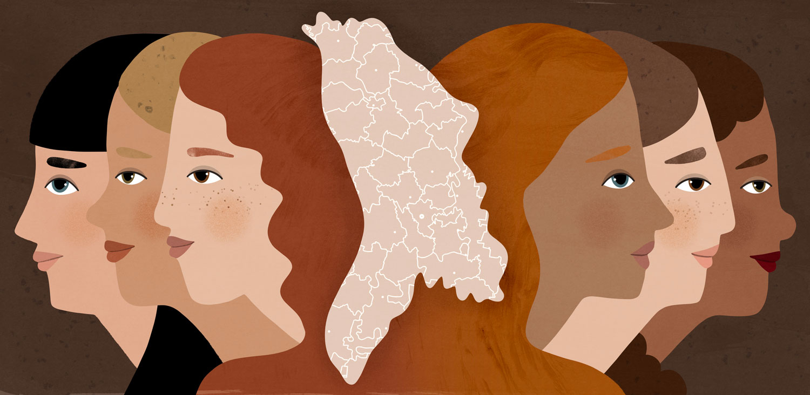
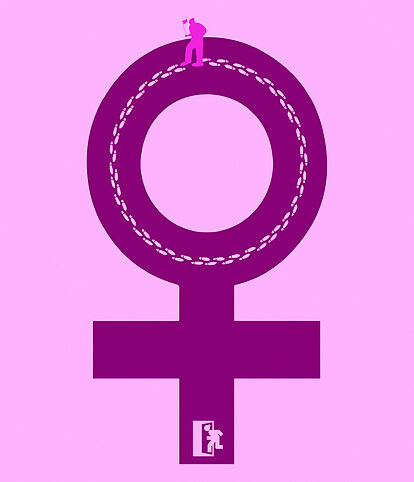

Feminism în Moldova
Feminism.md este un grup de tinere/i care promovează egalitatea de gen în Republica Moldova.Feminismd este un grup de inițiativă fondat în august 2020, care își propune să crească nivelul de conștientizare a tinerilor și tinerelor referitor la problemele în bază de gen.
Scopul nostru este de a informa adolescenții/adolescentele prin conținut media și evenimente despre inegalitățile de gen din societate și a îi/le împuternici în combaterea acestor nedreptăți.

SCURT ISTORIC
Feminismul a apărut în sec. al 19-lea, focalizat inițial pe acordarea dreptului de vot femeilor. La nivel internațional, mișcarea a fost pătrunsă de ideologia socialistă. În 1857, femeile care lucrau în fabricile de textile din New York au ieșit în stradă pentru a cere emancipare politică. În Europa, mișcarea a adoptat o poziție similară.

ACTUALITATEA FEMINISMULUI ÎN LUME
Această mișcare a avansat, fără îndoială, agenda feministă. Datorită acestor proteste, femeile au avut oportunitatea să iasă din relații sau căsătorii violente și nesatisfăcătoare, au obținut drepturi de a alege căi educaționale și cariere considerate anterior potrivite doar pentru bărbați. Dar, în același timp, această mișcare a individualizat feminismul.

FEMINISM ÎN REPUBLICA MOLDOVA
Mișcarea femeilor din regiunea noastră a început în Rusia țaristă și a dat start Revoluției din Februarie (Февральская революция). La 8 martie 1917, femeile muncitoare din industria textilă din Petrograd au ieșit în stradă cerând sfârșitul regimului țarist, au protestat împotriva deficitului de alimente și pentru sfârșitul primului război mondial.
O arată măcar şi viteza cu care se mişcă două proiecte legislative, privind cotele pentru femei care s-au împotmolit de ani de zile – unul în parlament şi altul în guvern.
De ce avem nevoie de o mișcare de feminism radical în Moldova?
# Staff-ul Feminismd aici
| | |  | 
|